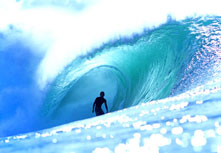

Surfing
Surfing is a surface water sport in which the participant is carried along the face of a breaking wave, most commonly using a surfboard. Two major subdivisions within contemporary stand-up surfing are reflected by the differences in surfboard design and riding style of longboarding and shortboarding.
In tow-in surfing (most often, but not exclusively, associated with big wave surfing), a surfer is towed into the wave by a motorized water vehicle, such as a jetski, generally because standard paddling is often ineffective when trying to match a large wave's higher speed.
Swell is generated when wind blows consistently over a large area of open water, called the wind's fetch. The size of a swell is determined by the strength of the wind, the length of its fetch and its duration. So, surf tends to be larger and more prevalent on coastlines exposed to large expanses of ocean traversed by intense low pressure systems.
Local wind conditions affect wave quality, since the ridable surface of a wave can become choppy in blustery conditions. Ideal surf conditions include a light to moderate strength "offshore" wind, since this blows into the front of the wave making it barrel or tube.
The factor which most determines wave shape is the topography of the seabed directly behind and immediately beneath the breaking wave. The contours of the reef or sand bank influence wave shape in two respects. Firstly, the steepness of the incline is proportional to the resulting upthrust. When a swell passes over a sudden steep slope, the force of the upthrust causes the top of the wave to be thrown forward, forming a curtain of water which plunges to the wave trough below. Secondly, the alignment of the contours relative to the swell direction determines the duration of the breaking process. When a swell runs along a slope, it continues to peel for as long as that configuration lasts. When swell wraps into a bay or around an island, the breaking wave gradually diminishes in size, as the wave front becomes stretched by diffraction.
For specific surf spots, the state of the ocean tide can play a significant role in the quality of waves or hazards of surfing there. Tidal variations vary greatly among the various global surfing regions, and the effect the tide has on specific spots can vary greatly among the spots within each area. Locations such as Bali, Panama and Ireland experience 2-3 meter tide fluctuations, whereas in Hawaii the difference between high and low tide is typically less than one meter.
Surfing was a central part of ancient Polynesian culture, and the chief was the most skilled wave rider in the community with the best board made from the best tree. Moreover, the ruling class had the best beaches and the best boards, and commoners were not allowed on the same beaches, but they could gain prestige by their ability to ride the surf on their extremely heavy boards. According to the same website, surfing permeated ancient Polynesian society, including religion and myth, and Polynesian chiefs would demonstrate and confirm their authority by the skills they displayed in the surf.
The art of surfing was first observed by Europeans in 1767, by the crewmembers of the Dolphin at Tahiti. Later, Lieutenant James King wrote about the art when completing the journals of Captain James Cook upon Cook's death in 1779.
Source:Wikipedia